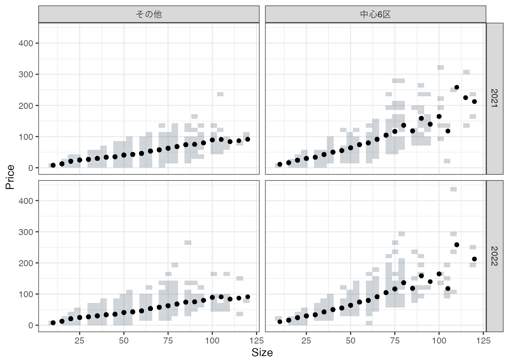
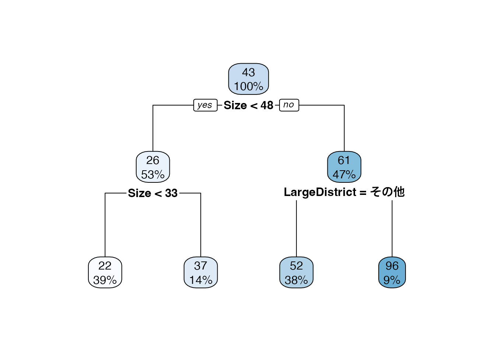
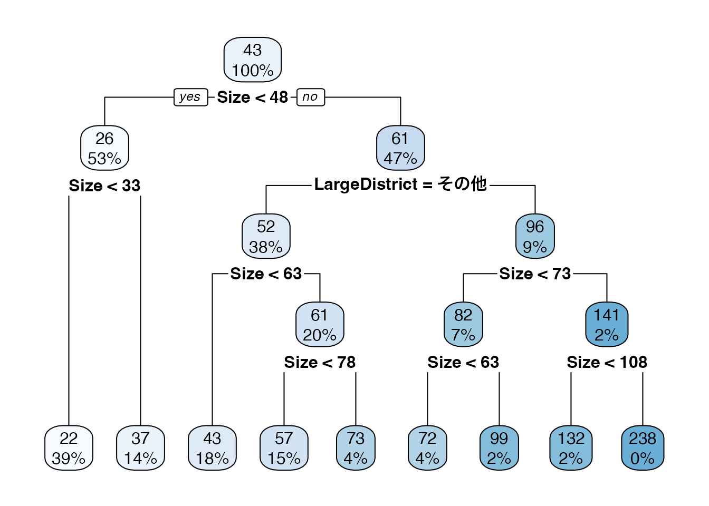
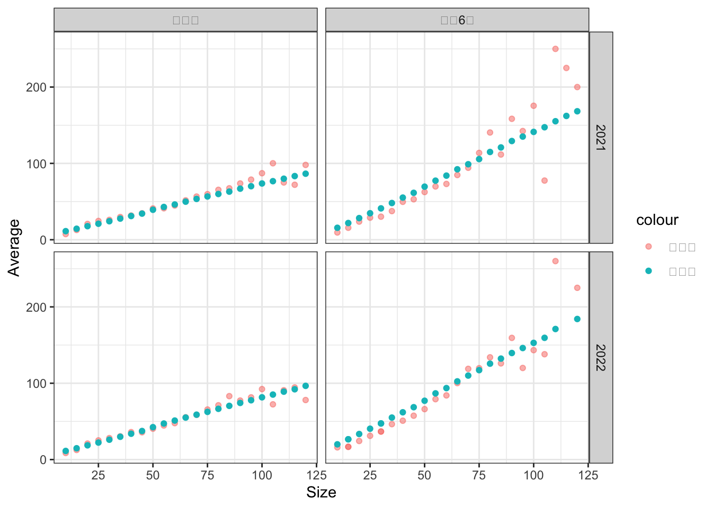

| Price | Size | TradeYear | LargeDistrict |
|---|---|---|---|
| 11 | 15 | 2022 | 中心6区 |
| 32 | 30 | 2022 | 中心6区 |
| 85 | 45 | 2022 | 中心6区 |
| 130 | 80 | 2022 | 中心6区 |
| 58 | 55 | 2021 | 中心6区 |
| 51 | 55 | 2021 | 中心6区 |
| 11 | 20 | 2021 | 中心6区 |
| 140 | 95 | 2021 | 中心6区 |
| 48 | 35 | 2021 | 中心6区 |
| 49 | 40 | 2021 | 中心6区 |
1 重要なコンセプト
観察できない要因
要約
Data adaptive model
1.1 状況設定
本ノートにおいてデータ分析法は、「事例から学ぶ方法」として位置付けます。 事例とは、過去の経験や出来事、歴史などであり、その蓄積をデータと呼びます。 例えば不動産取引調査から、以下のような不動産取引事例をダウンロードできます。
以上のような取引事例が 6378 個収録されています。 このようなデータを用いて、以下のような意思決定問題に役立つ情報提供のあり方を、ラフに論じます。
直面する意思決定問題1: ある物件の買取価格の決定
- 必要な情報: その物件の市場価格
直面する意思決定問題2: 営業や支店網構築の重点地域決定
- 必要な情報: どのような地域で取引価格が伸びているのか把握
1.2 分析例: 個別事例分析
典型的な事例分析法として、個別の事例を丹念に調べていく方法があります。 例えば、以下の5800万円で取引されている物件が、データの中に含まれていました。
| Price | Size | TradeYear | LargeDistrict |
|---|---|---|---|
| 200 | 105 | 2022 | 中心6区 |
この事例から、同様の特徴を持つ物件は2億円で取引される傾向があったと結論づけても良いでしょうか？ ほとんどの応用でこのような推測は、不適切です。 実際に同じデータの中に、取引価格以外全く同じ特徴を持つ物件の取引事例が3件ありました。 これらの事例と比較すると、2億円はかなり低い価格での取引だったことがわかります。
| Price | Size | TradeYear | LargeDistrict |
|---|---|---|---|
| 200 | 105 | 2022 | 中心6区 |
| 150 | 105 | 2022 | 中心6区 |
| 92 | 105 | 2022 | 中心6区 |
| 110 | 105 | 2022 | 中心6区 |
なぜこのような取引価格のブレが生じるのでしょうか？ データのご入力など潜在的な理由は多岐に渡りますが、有力なのは、このデータに含まれない重要な情報 が存在することです。 例えば、最寄駅や公園の近くにあるか否かなどのより詳細な立地情報が考えられます。 このような詳細な立地も、取引価格に影響を与え、結果として事例の下振れ/上振れが生じます。
1.3 分析例: モデル化
現代の分析で用いられるデータは、一般に多くの事例を含んでいます。

上記の散布図は、社会分析に用いるデータの持つ典型的な特徴を表しています。 乱雑であり、同じ\(X\) でも \(Y\) が異なる事例が多い
1.3.1 丸暗記
個別事例分析の平均値を使う。 全ての\(X\)に適用

決定係数は、0.676 でした。
1.3.2 サブグループ平均
- 分析者が、サブグループ (モデル) を定義する
- 例: 練馬区かどうか \(\times\) 部屋の広さが20以下
- サブグループの平均値を計算
集計により事例固有の観察できない要因の影響を軽減する
モデルの定義を変えると、推定結果が大きく変化する
1.3.3 決定木
決定木アルゴリズム: データに最も適合するように、サブグループを定義する
- 明確な基準(“データへの適合”)のもとで、要約方法を決定
例. 最大４グループに分けることは前提に、平均二乗誤差 \[(Y - モデルの予測値)^2のデータ上での平均値\] を可能な限り削減するようにグループ分けを行う
- 近似的に削減する (Greedy-algorithm)


1.3.4 決定木


1.4 機械学習

1.5 推定法
要約の方法として、大きく統計学と機械学習/AIがキーワードとして流布している
伝統的な計量経済学は、統計学と密接
機械学習は、統計学とは異なるルーツ(AIの開発)を持つ
1.6 機械学習
新しい推定のアイディアを、データ分析が持ち込まれている
- 伝統的な方法と比べて、よりデータ主導のモデル化を行う傾向がある